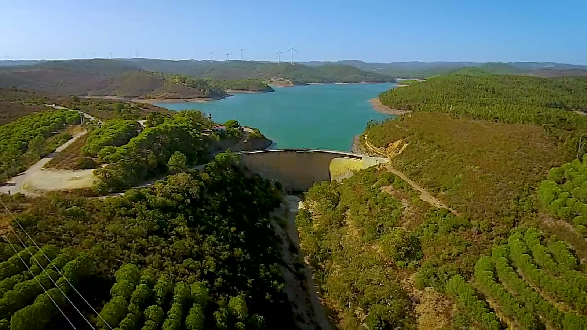
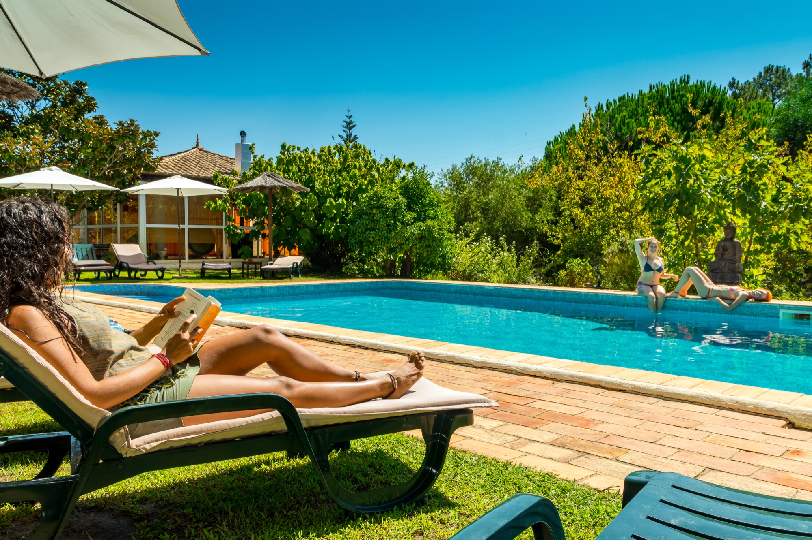
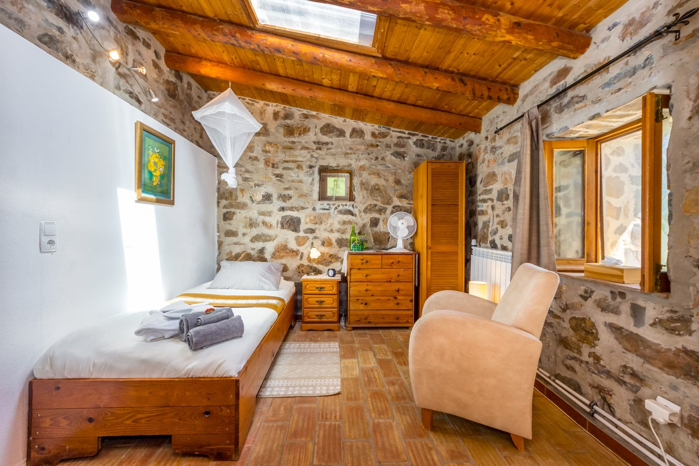
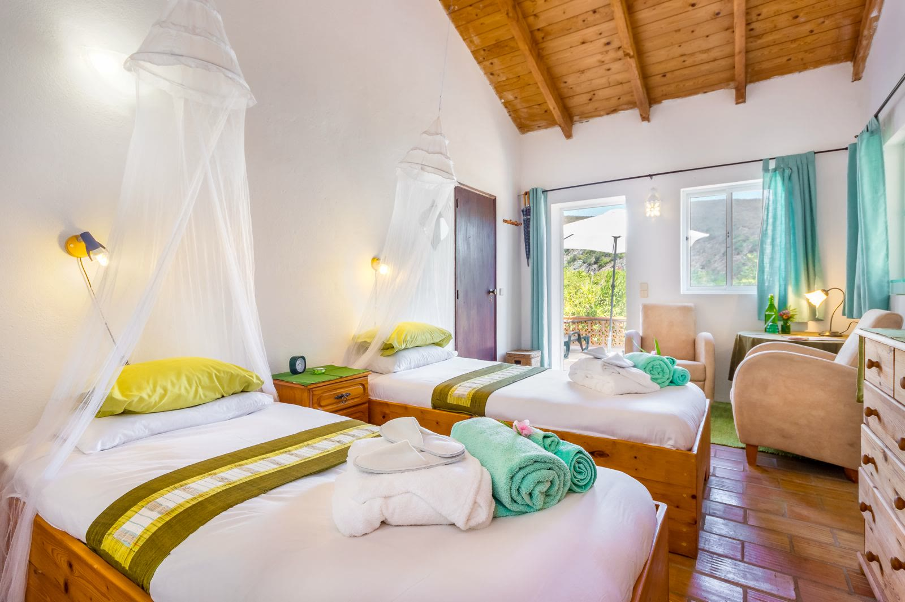
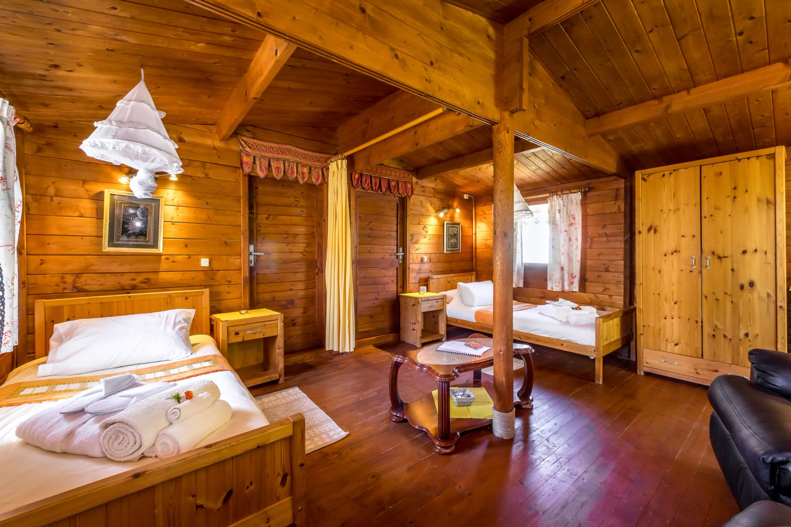
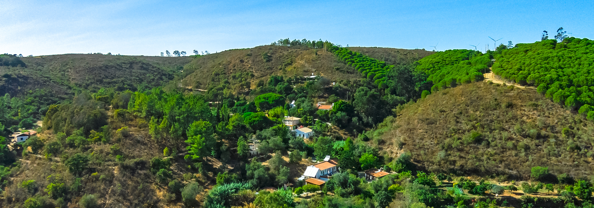

Est. 1992 · Lagos, Portugal
Reset your body.
Quiet your mind.
World-renowned juice detox retreats in a hidden Algarve valley — a transformative experience refined over three decades.
“One of the ten best detox retreats in the world”
— The Sunday Times
Welcome to our home
Hi — we’re Richard, Karen, Chris, Ivan and Bliss
We’d like to welcome you to our pioneering juice detox and yoga retreat, Moinhos Velhos. Founded in 1992, it was one of the first centres of its kind in the world. We were fortunate to work alongside the original founders for many years, integrating their wisdom before taking over the centre ourselves. Between us, we bring more than fifty years of experience leading juice detox retreats.
We’ve stayed true to the foundations of the original programme while keeping its pioneering spirit alive — continuing to learn, evolve and develop the experience year after year.
We don’t just want to be a retreat from your normal life — we want to be a catalyst for resetting it.
Richard on what a week at Moinhos Velhos really is — one minute, worth it.




Everything you need to let go
7 or 10 days of nourishment for body, mind & spirit
This is a place to cleanse, energise, regenerate and connect. Our guests return over and over as we provide a place to retreat and cleanse, and also to grow.
- Daily yoga & evening meditation or workshop
- Freshly-pressed juices & evening broth
- Initial health check with our naturopath
- Nutrition & wellness workshops
- Salt-water pool & Finnish sauna
- QRS electromagnetic bed & clinic equipment
- Fire ceremony & spiral walk
- Weekly beach or beauty-spot day trip
A day at Moinhos Velhos
The rhythm your body remembers
Nourishment every three hours, movement every morning, stillness every evening — and long unhurried spaces in between.
07:00
Gentle wake-up
Lemon water as the valley wakes around you
08:00
Morning yoga
All-levels practice in the yoga temple
10:00
First juice
Pressed minutes before it reaches you
10:45
Optional therapies
Including deep tissue massage, acupuncture, Bowen
13:00
Midday juice
Freshly pressed, never two the same
13:45
Optional therapies
Including Inspirational Healing, CQM, reflexology, Reiki
16:00
Juice & workshop
Daily nutrition and wellness workshops, then sauna time
19:00
Evening broth
Warm, mineral-rich vegetable broth
19:45
Meditation or workshop
Close the day quietly, under the temple roof
Stay your way
Rooms, cottages & bell tents
From premium singles in the converted old mill to shared twin cottages with a bathroom each — and canvas under the stars in summer.

The Mill
Two premium en suite singles inside the old mill itself
from €1,750

Main Guesthouse
Twin rooms and a premium single opening onto the garden terrace
from €1,250

Twin Cottages
Timber cottages with two en suite bathrooms — one each
from €1,450

Since 1992
Three decades of doing one thing, beautifully
The programme cleanses far more than the body. Yoga, meditation, therapies and honest human connection work together, so you leave lighter in every sense — with the clarity to reset life at home, too.
Guests return year after year — not because a week here is an escape, but because it changes what they go home to.
In their words
What our guests have to say
Nothing we write beats hearing it from the people who came, fasted and went home changed.
As featured in
- The Sunday Times
- The Guardian
- Daily Mail
- The Daily Telegraph
- Marie Claire
- Vogue Portugal
- Yoga Journal
- OM Yoga Magazine
Guests come for a detox and leave with far more — clarity, connection and a body that finally feels like their own again. Many return year after year.
Rated 4.9/5 on Google · 4.8/5 on TripAdvisor · 10/10 on Trip.com · thousands of guests since 1992

The western Algarve
A valley that does half the work
Fifteen minutes from Lagos and an hour from Faro, the retreat sits in a tranquil 16-hectare valley beside the Barragem da Bravura — quartz-laced hills, birdsong mornings and star-thick nights, far from the tourist coast.
- One hour from Faro Airport, transfers arranged
- Twelve buildings, terraced gardens and a 160 m² greenhouse
- Salt-water pool and wood-fired Finnish sauna, year round
- Weekly trip to a stunning local beach
Questions?
The things everyone asks first
Will I be hungry?
Most guests are surprised how manageable it feels — a juice or broth arrives every three hours, so there is never long to wait, and the therapies, classes and company nourish you in other ways.
I've never fasted or done yoga — is it for me?
Yes. The programme suits all ages and levels, the morning and evening classes are kept genuinely accessible, and you choose how much of the schedule to take part in.
Can I come on my own?
Around half our guests do. Groups are small and connection comes naturally — and you can have a room to yourself, or share a twin matched with a guest of the same sex.
Can my partner and I share a room?
Of course — book together in one step, or join their existing booking with their reference. Couples and friends who know each other can share regardless of sex.

Your reset is waiting
Retreats from €1,250
Choose your dates, pick your room from live availability, and reserve with a €350 deposit. It takes about five minutes.